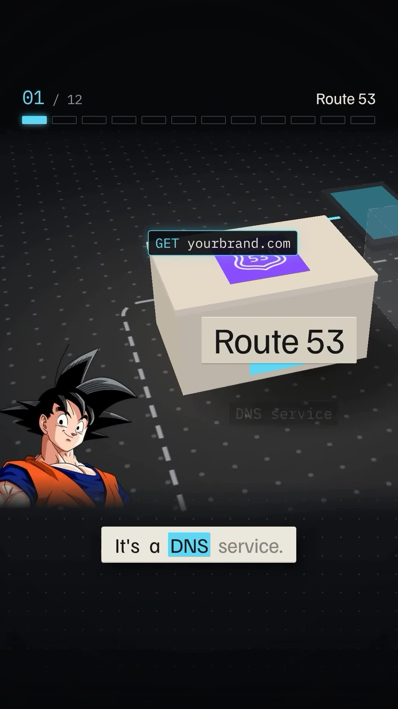
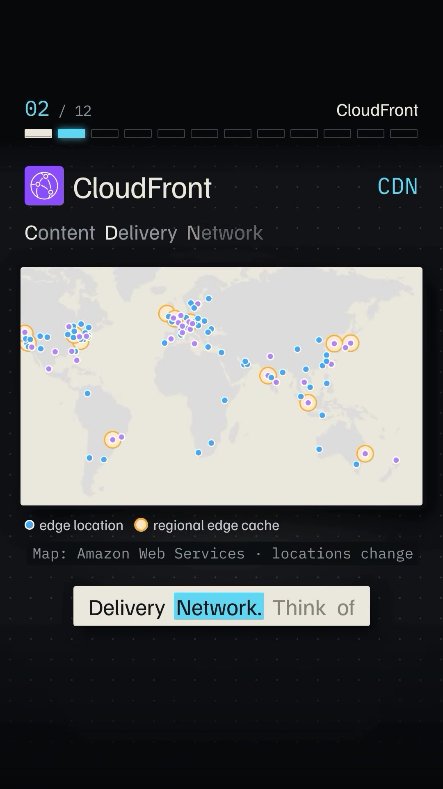
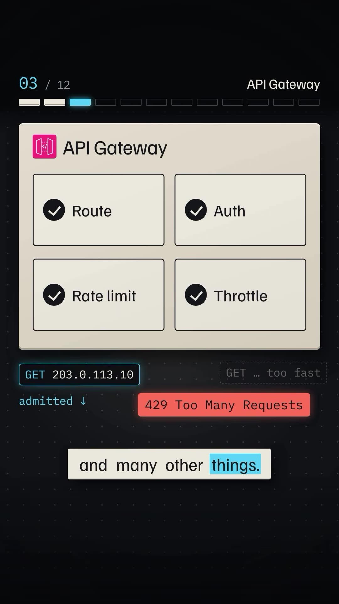
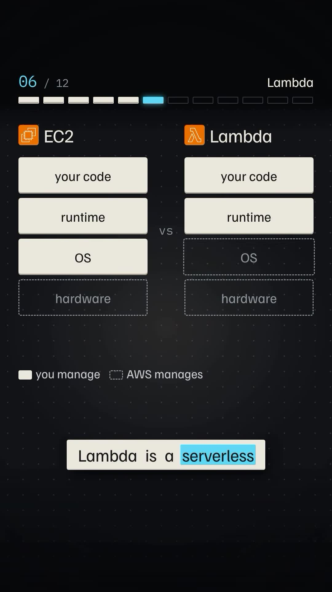
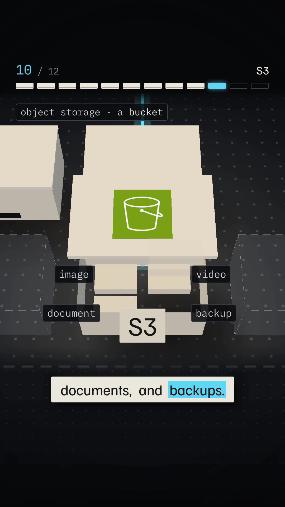
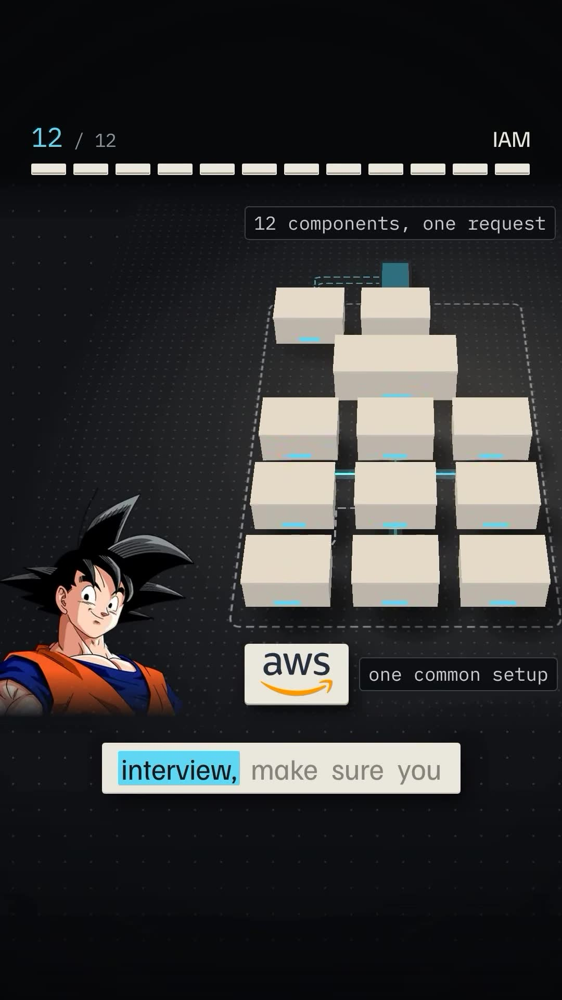

Executive Summary
The classic software engineering interview prompt—"Explain what happens from the moment you type a URL in your browser and press Enter"—tests an engineer's end-to-end understanding of networking, DNS, caching layers, load balancers, and persistent data tiers.
In modern enterprise infrastructure, this journey maps directly to native AWS cloud primitives. In this comprehensive architecture walkthrough, Duology details the complete request lifecycle across 9 interconnected AWS services—from DNS resolution through edge caching, gateway throttling, compute execution, asynchronous message buffering, and storage.
Core Visual Demonstrations






The 9-Stage Request Lifecycle Through AWS
1. DNS Resolution: Amazon Route 53
The browser checks local and OS DNS caches before dispatching an iterative DNS lookup to Amazon Route 53. Route 53 uses global Anycast routing, latency-based routing, and weighted health checks to return the nearest IP address of the edge network in sub-20ms.
2. Edge Acceleration: Amazon CloudFront (CDN)
The request reaches the nearest CloudFront Point of Presence (PoP). If the request is for static media (HTML, CSS, JS, images) or cached responses (stale-while-revalidate), CloudFront serves the response immediately from edge memory, completely shielding backend servers from load.
3. Application Perimeter: Amazon API Gateway & WAF
Dynamic API requests pass through AWS WAF (Web Application Firewall) to block SQLi/DDoS attacks, landing at Amazon API Gateway (or Application Load Balancer):
- JWT / OAuth Validation: Verifies user auth tokens before hitting backend compute.
- Rate Limiting & Throttling: Enforces token-bucket algorithms (e.g., 50 req/sec per API key) to protect downstream services from runaway clients.
- SSL/TLS Termination: Offloads encryption overhead.
4. Compute Execution Tier: EC2 vs ECS vs Lambda
AWS provides three distinct compute archetypes:
| Service | Model | Tradeoffs |
|---|---|---|
| Amazon EC2 | Virtual Machines (IaaS) | Maximum OS-level control; requires manual patching, OS updates, and autoscaling tuning. |
| Amazon ECS / EKS | Docker Containers (CaaS) | Predictable microservice orchestration with Fargate serverless compute; ideal for long-lived backend APIs. |
| AWS Lambda | Functions-as-a-Service (Serverless) | Zero server management; scales from 0 to 10,000+ executions automatically; pay-per-millisecond; potential cold start latency. |
5. Asynchronous Decoupling: Amazon SQS
When a request involves long-running operations (email generation, payment reconciliation, video encoding), the backend never blocks the HTTP response loop. It immediately writes a message to Amazon SQS (Simple Queue Service) and returns HTTP 202 Accepted to the user. Background worker fleets consume the queue asynchronously with dead-letter queue (DLQ) retry guarantees.
6. Persistence Layer: Amazon RDS vs DynamoDB
- Amazon RDS / Aurora: For ACID-compliant transactional relational workloads requiring complex joins, SQL constraints, and referential integrity.
- Amazon DynamoDB: Fully managed NoSQL key-value/document database delivering predictable single-digit millisecond latency at any throughput scale.
7. Blob Storage: Amazon S3
User-uploaded documents, videos, and avatars are never stored inside databases or container file systems. They reside in Amazon S3, delivering 99.999999999% (11 9s) durability, presigned upload URLs, and direct integration with CloudFront.
8. Observability & Telemetry: Amazon CloudWatch
Every component streams structured JSON logs, system metrics (CPU, RAM, 5xx error rates, queue depth), and distributed traces (AWS X-Ray) to CloudWatch, triggering automated alarms and PagerDuty escalations.
9. Security & Governance: AWS IAM
Governs every internal service-to-service transaction using least-privilege IAM Roles. ECS containers communicate with S3 and SQS using ephemeral, rotating STS credentials rather than hardcoded API keys.